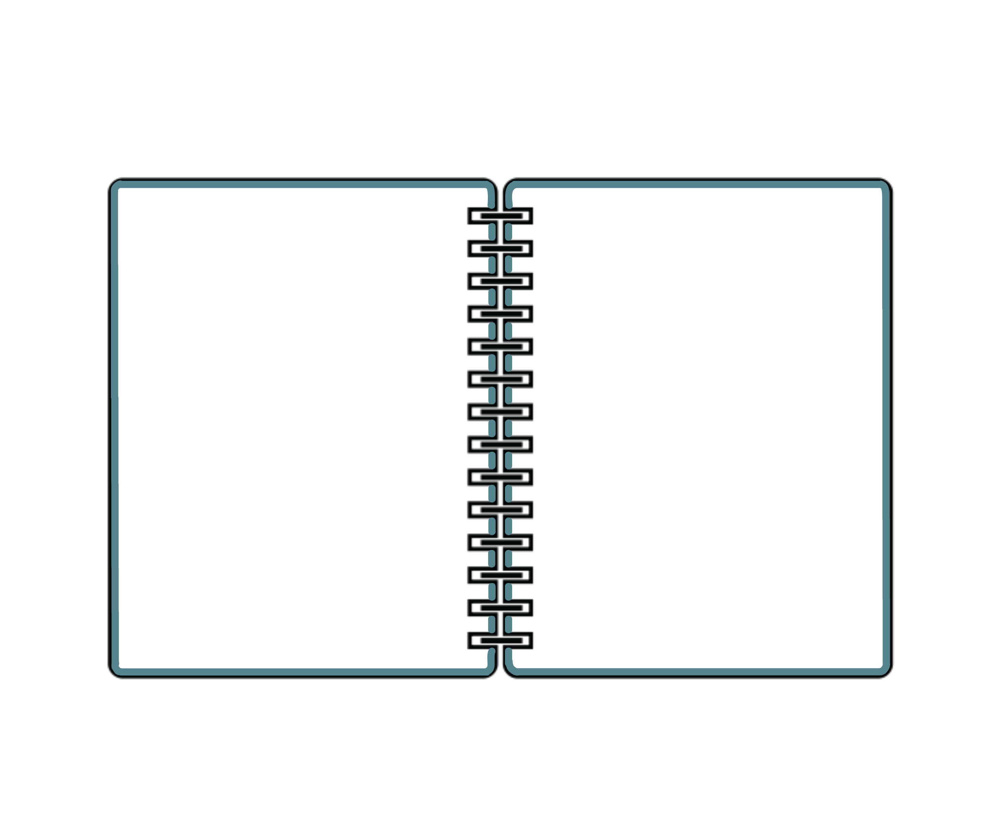

Evidentiary Marks
I slowed down how quickly I drank my coffee every morning, starting out with 5 minutes and then adding 5 minutes everyday. At first I started out just pouring coffee onto my paper and then would add more to each piece as I slowed down how quickly I drank my coffee. I also used the bottom of a coffee cup and dipped it into the coffee and put it on the page. With the coffee grounds I varied between dripping the glue across the page and sprinkling the coffee on it and putting a lot of glue down and packing the coffee on.